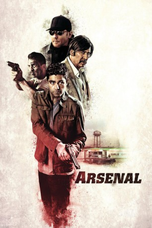

#7424 Arsenal
 
 IMDB-Wertung: 4.0 / 10
IMDB-Wertung: 4.0 / 10  Tomatometer: 3
Tomatometer: 3  Metascore: 25
Metascore: 25 
Mikey (Johnathon Schaech) und JP (Adrian Grenier) sind Brüder und quasi ohne Eltern aufgewachsen. Sie konnten sich immer nur auf den jeweils anderen verlassen. Deshalb ist JP, der mittlerweile als Besitzer einer Baufirma einigermaßen gut über die Runden kommt, auch sofort zur Stelle, als Mikey durch kriminelle Aktivitäten in der Klemme steckt. Er schuldet dem rücksichtslosen Gangsterboss Eddie King (Nicolas Cage) eine Menge Geld. Als Mikey entführt wird und auch JPs Nichte mit in die Sache hineingezogen wird, wendet er sich an einen alten Freund der Brüder: Sal (John Cusack) arbeitet als Privatdetektiv und hilft JP, seinen Bruder aus den Fängen von King sowie dessen Armee von Gangstern zu befreien.
Jahr: 2017
Dauer: 97 Minuten
FSK: 18
Land: USA Studio: Lionsgate PremiereTonspuren: DTS - ,
Untertitel: Deutsch,
Auflösung: 1080p (1920x808) Größe: 5427 MB
Genre: Action, Thriller, Krimi
Regisseur: Steven C. Miller
Drehbuch: Jason Mosberg
Soundtrack:
Darsteller:
 Nicolas Cage als Eddie King
Nicolas Cage als Eddie King John Cusack als Sal
John Cusack als Sal Adrian Grenier als JP
Adrian Grenier als JP Johnathon Schaech als Mikey
Johnathon Schaech als Mikey Lydia Hull als Lizzie
Lydia Hull als Lizzie William Mark McCullough als Luca
William Mark McCullough als Luca- Abbie Gayle als Alexis
- Kelton DuMont als Young JP
- Zachary Legendre als Young Mikey
- Megan Leonard als Vicki
 Shea Buckner als Rusty
Shea Buckner als Rusty- Christopher Coppola als Buddy King
 Christopher Rob Bowen als Rob
Christopher Rob Bowen als Rob Tyler Jon Olson als Gus
Tyler Jon Olson als Gus- Todd Jenkins als Pawn Shop Owner
 Jared Bankens als Skittish Man
Jared Bankens als Skittish Man- Tamara Belous als Janet - Girl in Bar
- Javier Sepulveda als Fan - JP's Friend
- Heather Johansen als Kristy
- Carrie Jo Crosby als Chelsea
- Vivian Benitez als Lisa
 Sean Paul Braud als Mr. Kuchar , uncredited
Sean Paul Braud als Mr. Kuchar , uncredited Hans Marrero als Eddie's Thug #1 , uncredited
Hans Marrero als Eddie's Thug #1 , uncredited- Erik Schultz als Eddie's Thug #3 , uncredited
- Alfonzo Walker als Construction Worker , uncredited
- Dylan DePaula als Young Mikey's Friend
- C.J. LeBlanc als Hoya
- Robert Harvey als Eddie's Bodyguard
- Javier Gonzalez als Young JP's Friend
- Douglass Sellers als Jacksonville Fan
- Catherine Ashton als Black Bear Bartender
- James Donald als Uncle Rich , uncredited
- Hannah Jacole Powell-Yost als Hannah Jacole Powell-Yost , uncredited
Datei: X:\FSK18-2017\Arsenal (2017, FSK18, 1920x808).mkv seit 10.11.2017
Festplatte: FSK18
 Es gibt insgesamt 24 Filme in der Gruppe 'FSK18-2017'
Es gibt insgesamt 24 Filme in der Gruppe 'FSK18-2017'